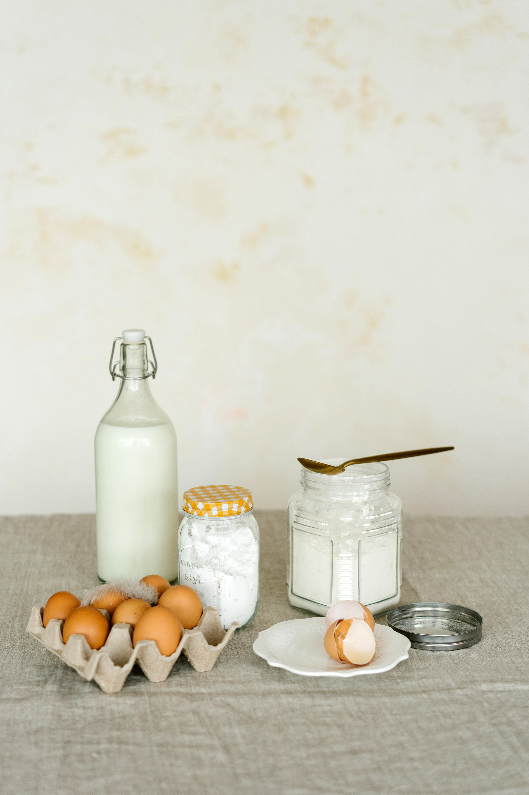
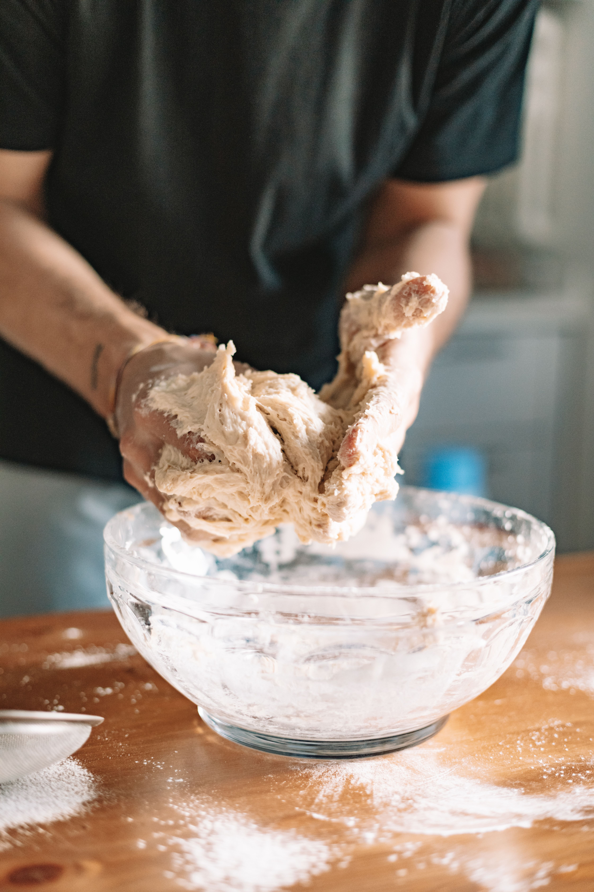
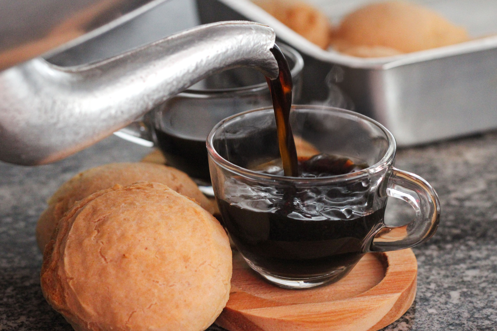

Pan de queijo
Descubre uno de los aperitivos más populares de Brasil: pequeños panecillos de queso con una corteza ligeramente crujiente y un interior suave y elástico.

Historia y tradición
El pan de queso (pão de queijo) es una de las especialidades más tradicionales de la gastronomía brasileña, originaria del estado de Minas Gerais. Su historia se remonta al período colonial, cuando el trigo era escaso y costoso. Como alternativa, se comenzó a utilizar el almidón de yuca (en portugés "mandioca"), un ingrediente abundante en la región y presente desde hacía siglos en la alimentación de los pueblos indígenas.
La combinación del almidón de yuca con los quesos producidos en Minas Gerais dio lugar a unos pequeños panecillos crujientes por fuera y suaves por dentro. Inicialmente, el pão de queijo se preparaba en las cocinas de las haciendas y se consumía de forma casera. Con el tiempo, comenzó a venderse en mercados y ferias, ganando popularidad en otras regiones de Brasil.
Actualmente, el pan de queso es un símbolo de la cocina de Minas Gerais y se disfruta en todo Brasil, especialmente durante el desayuno o la merienda, acompañado de una taza de café. Existen numerosas variantes elaboradas con diferentes tipos de queso y otros ingredientes, y su popularidad ha llegado también a restaurantes y cafeterías de otros países.
Ingredientes principales
- 500 g de almidón de mandioca fermentado (polvilho azedo)
- 500 g de almidón de mandioca dulce (polvilho doce)
- 150 ml de leche
- 150 ml de agua
- 150 ml de aceite vegetal
- 20 g de sal
- 400 g de queso curado
- 5 huevos
Cómo preparar el pan de queso
- Calienta la leche, el agua y el aceite en una cazuela.
- Mezcla los dos tipos de almidón de yuca en un recipiente grande.
- Vierte los líquidos calientes sobre los almidones y remueve hasta obtener una masa homogénea.
- Añade el queso curado y mezcla bien hasta integrarlo en la masa.
- Incorpora los huevos y amasa hasta conseguir una textura lisa y uniforme.
- Forma pequeñas bolas con la masa y colócalas en una bandeja para horno.
- Hornea en el horno previamente calentado a 190-200 °C durante aproximadamente 23 minutos.
El pão de queijo en imágenes



Vídeo de preparación
Descubre cómo preparar estos tradicionales panecillos brasileños paso a paso.